Passkeys
The End of Passwords and the Future of Authentication
Kansas City Developer Conference 2025
Mateusz Zając
Software Engineering Manager • Mobile Apps
Ready to ditch passwords?
🔓
Passkeys Promise
- 🔐 Public-key crypto + biometrics
- 🛡️ Phishing-proof by design
- ⚡ Convenient one-tap sign-in
- 🔒 Secure: Nothing sensitive on servers
Adopted by
Others
Microsoft, FIDO Alliance
Business wins
- 🛡️ Fewer breaches
- ✨ Simpler flows
- 💰 Lower costs
Goals
- 🔑 What are passkeys?
- ⚔️ Vs. passwords
- 💻 Implementation
- 🎯 Best practices
Password pitfalls.
😤
Attacks
Phishing. Real-world example.
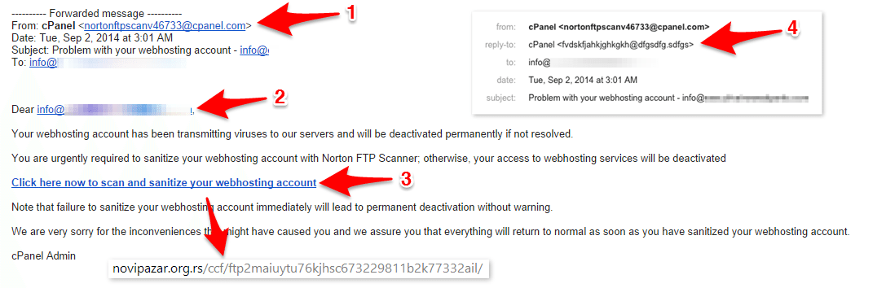
Credential stuffing.
Server breaches.
UX nightmares
- 😵 Complex rules.
- 🔄 Resets.
- 📅 Rotations.
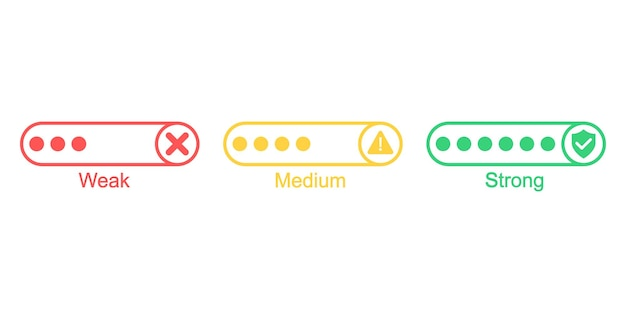
Password vs. Passkey: Creation
Password Creation
- ⌨️ Type twice
- 📝 Meet complexity rules
- 🤞 Hope it's strong
Passkey Creation
- 🔐 Auto-generated
- 😊 Face ID confirmation
- ⚡ Done in seconds
Password Reset Journey
Step 1: Forgot Password
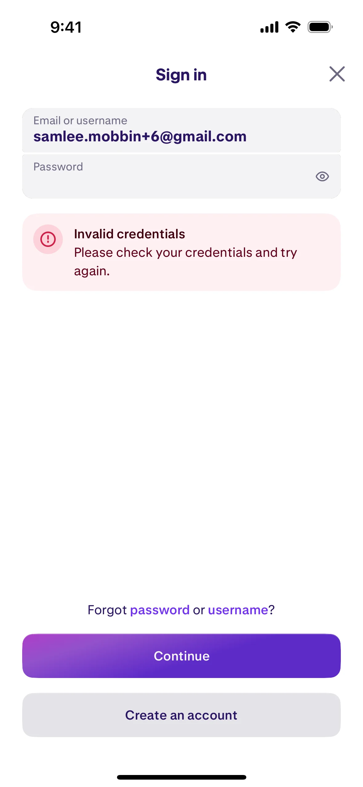
Step 2: Enter Email
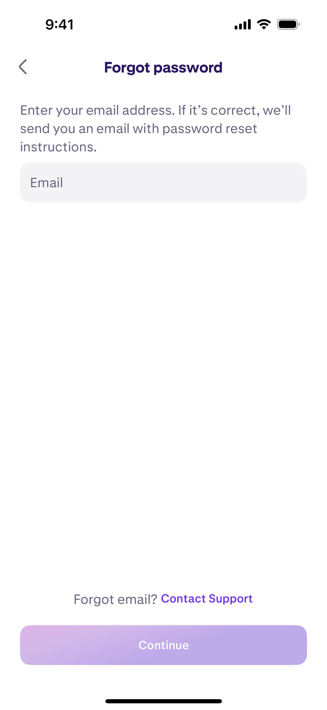
Step 3: Check Your Email
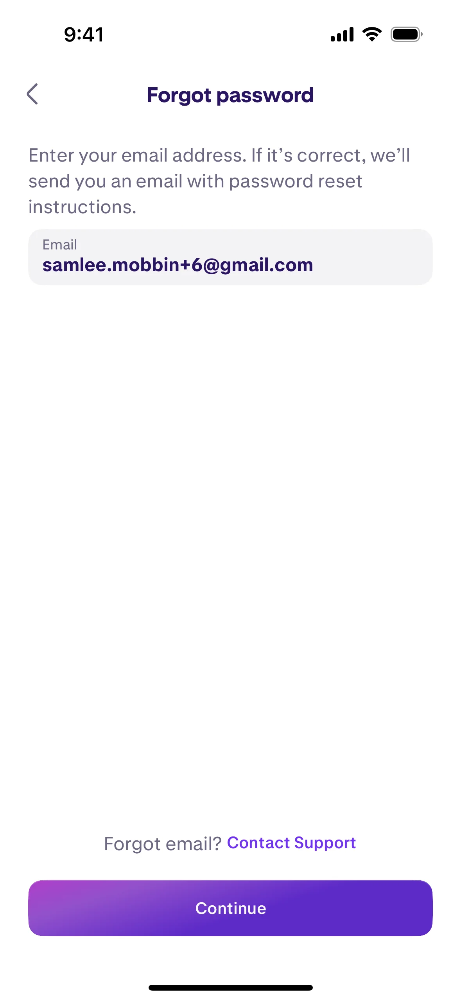
Step 4: Find the Reset Email
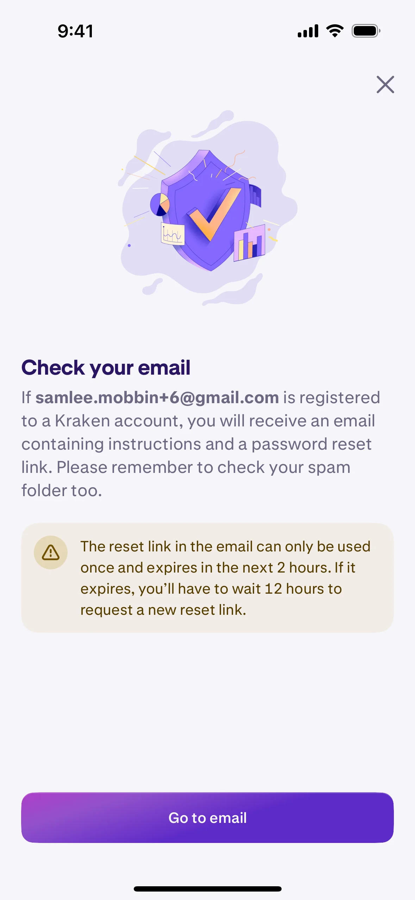
Step 5: Click the Link
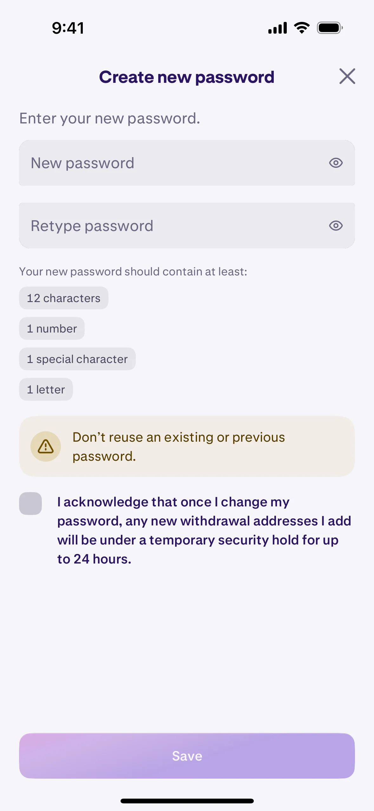
Step 6: Create New Password
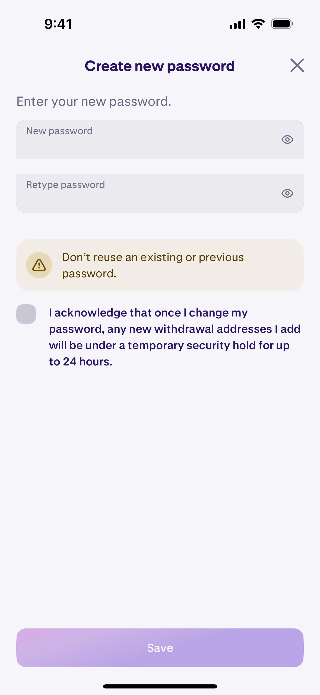
Step 7: Confirm Password
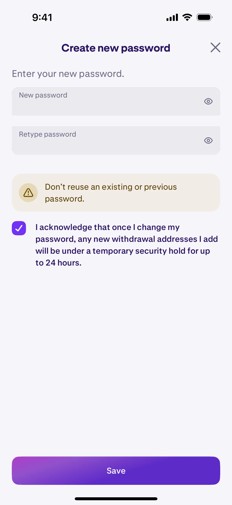
Step 8: Success... Until Next Time
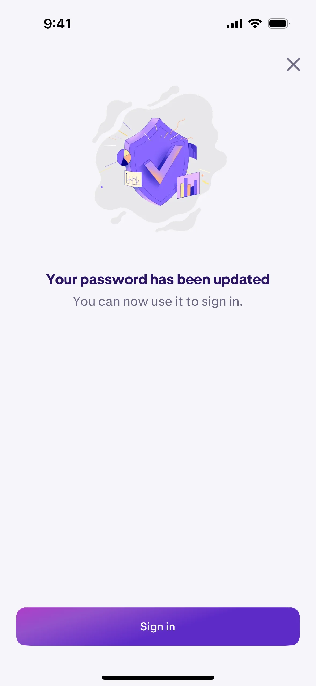
The Numbers Don't Lie
81%
of breaches involve
compromised credentials
51%
of people reuse
the same password
2.5M
passwords stolen
every week
40%
of help desk calls
are password resets
Compare: Passwords vs. Passkeys
Password Reset
- 📋 8+ steps
- 📧 Email dependency
- ⏰ 5-10 minutes
- 😤 Frustration guaranteed
Passkey Recovery
- ☁️ Synced via iCloud
- 🔓 Face ID instant access
- ✅ No reset needed
- 🚀 Works immediately
Authentication Failures
33%
of users abandon
cart due to forgotten password
92%
of users leave site
when password fails
Passkeys eliminate ALL of these failures
2FA fails
- 📱 SMS phishable.
- 😩 Push fatigue.
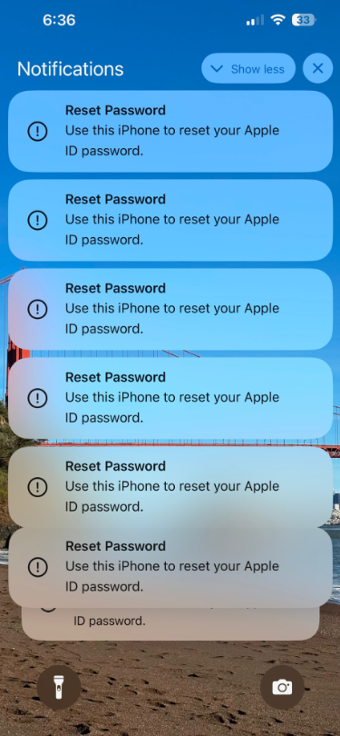
Passkey
- 🔑 Key pair.
- 🔓🔒 Public/private.
- ⚔️ vs. Hashed passwords.
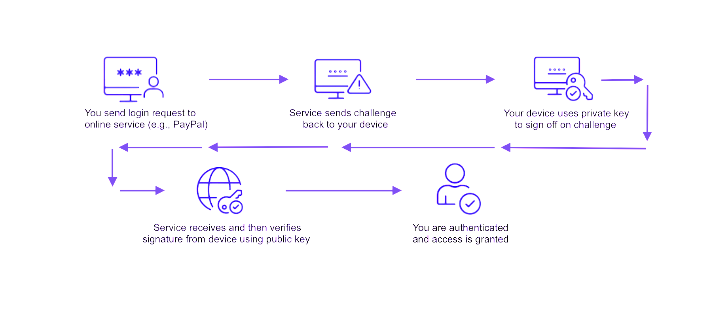
How Passkeys Work
Explained Simply 🔐
Step 1: You have a magic lockbox 📱
Your phone creates two special keys: one to keep secret (private), one to share (public)
Step 2: Website gets your sharing key 🌐
You give the website your public key - it's safe to share!
Step 3: Website sends you a puzzle 🧩
When you log in, the website sends a challenge only your secret key can solve
Step 4: Your phone proves it's you ✅
Face ID + secret key = solved puzzle = you're in!
Example: Amazon Login
📱 Step 1: One-Time Setup
Your device creates a cryptographic key pair:
🔐 Private Key: Your digital signature creator
Used to sign challenges - stored in Secure Enclave, never transmitted
📮 Public Key: Your signature verifier
Amazon stores this to verify your signatures are authentic
🔑 Based on FIDO2/WebAuthn standards using public key cryptography
Example: Amazon Login
🧩 Step 2: Login Challenge
You visit Amazon.com to sign in...
Amazon sends you a cryptographic challenge:
"Challenge: 7B3A9F2E4D6C8A1B
Origin: https://amazon.com
Timestamp: 2025-01-14T14:45:00Z"
✍️ Your device signs this with your private key
The signature proves you possess the private key without revealing it
Example: Amazon Login
✅ Step 3: Your Phone Responds
- 👤 Face ID scan → "Yes, it's you!"
- 🔐 Private key signs the challenge → Creates cryptographic signature
- 📤 WebAuthn response sent → Signature + authenticator data
- ✨ Server verifies with public key → Signature valid = Authenticated!
Example: Amazon Login
🚫 Step 4: Phishing Protection
If a scammer tries...
🎭 Fake site: "Amazom.com" (note the typo!)
📨 They ask you to sign: "HELLO AMAZOM"
🛡️ Your phone checks: "This isn't Amazon.com!"
🔒 Your SECRET-ENCODER: Refuses to sign!
❌ Why? Passkeys are locked to domains!
🚫 Result: No signature = No login!
Your passkey only signs for real Amazon.com! 🎯
Real-World Analogies
Understanding Public/Private Keys
🔏 Padlock & Key
Public: Open padlock (anyone can lock)
Private: Only your key can unlock
🏦 Bank Signature Card
Private: Your hand that signs
Public: Signature on file at bank to verify
Phishing-resistant.
No server secrets.
Sign-in: Step 1
Focus username.
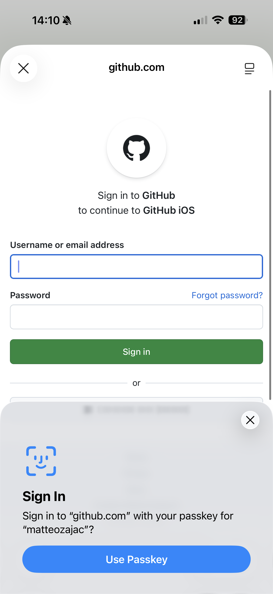
Select passkey.
Face ID.
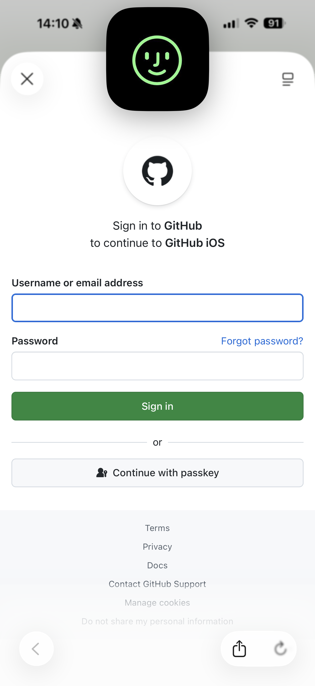
Faster.
Auto upgrades.
Silent creation.
Passkey Impact
4x
faster than
password login
99.9%
phishing attack
prevention rate
75%
reduction in
authentication time
Creating passkey: iOS
import AuthenticationServices
let provider = ASAuthorizationPlatformPublicKeyCredentialProvider(
relyingPartyIdentifier: "example.com"
)
let request = provider.createCredentialRegistrationRequest(
challenge: challengeData,
name: "User Name",
userID: userIDData
)
let authController = ASAuthorizationController(
authorizationRequests: [request]
)
authController.delegate = self
authController.presentationContextProvider = self
authController.performRequests()
Backend
- 🌐 WebAuthn.
- 🔐 FIDO2.
- ✅ No rewrite.
Backend: Node.js Example
const { Fido2Lib } = require('fido2-lib');
const f2l = new Fido2Lib({
rpId: "example.com",
rpName: "My App",
challengeSize: 32,
attestation: "none"
});
const registrationOptions = await f2l.attestationOptions();
const attestationResult = await f2l.attestationResult(
clientAttestationResponse,
registrationOptions
);
await saveUserCredential(userId, {
credentialId: attestationResult.authnrData.credId,
publicKey: attestationResult.authnrData.publicKey
});
No browser passkey?
Cross-device: QR.
Cross-Device Sign-In
Step 1: Scan QR Code
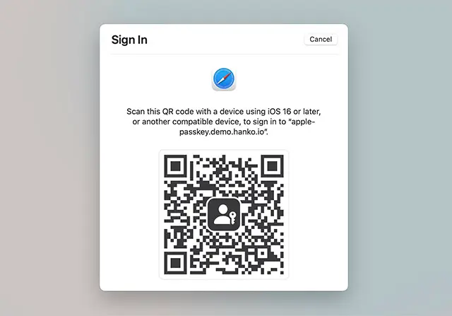
Step 2: Authenticate on Phone
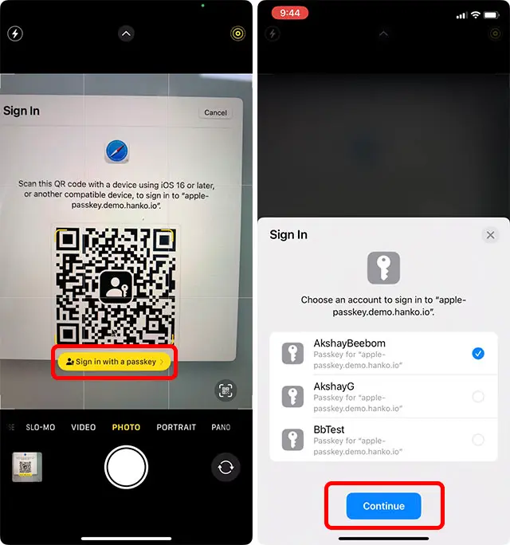
How It Works: QR Code Flow

Cross-Device Authentication
- 🔐 One-time QR code with session ID
- 🔄 Cryptographic challenge-response
- 📱 Private key never leaves device
- 🛡️ Encrypted data transmission
- ⏱️ Time-sensitive validation
Security Layer: Bluetooth Proximity
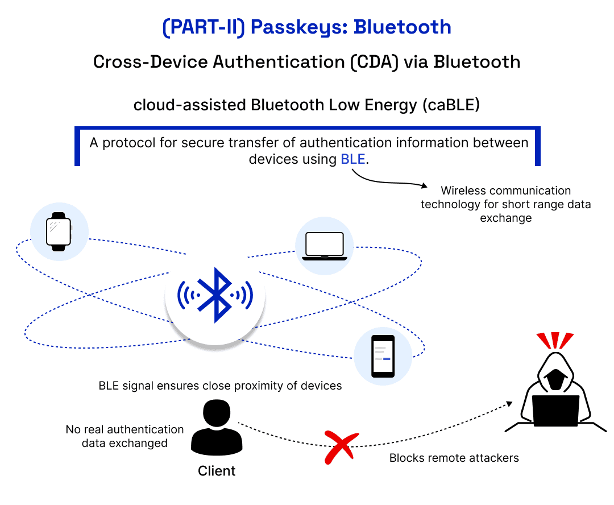
iCloud sync.
Sharing: AirDrop.
Passkey Sharing in Action
Global Momentum
1B+
passkey-enabled
accounts worldwide
400M
Google accounts
using passkeys
200+
major websites
support passkeys
52%
global consumer
awareness rate
Recovery
- 🔄 Fallback.
- 🤔 "Forgot?" strategies.
Real-World Challenges
What to Consider
⚠️ Technical Challenges
- 📱 Device loss recovery complexity
- 🔗 Cross-platform sync limitations
- 🏢 Legacy system integration
- 🌍 Inconsistent browser support
👥 Human Challenges
- 🎓 User education requirements
- 😟 Trust in new technology
- 🔄 Migration from passwords
- 👴 Accessibility for all users
Solutions exist for each challenge - plan accordingly!
Migration Strategy
Your Roadmap to Passwordless
6-Month Journey to Passwordless
Phase 1: Foundation
Months 1-2: Build & Test
📊
- ✅ Add passkey support alongside passwords
- 🧪 A/B test with 5-10% of users
- 📈 Track: creation rate, success rate, support tickets
- 🔧 Refine based on feedback
Phase 2: Expansion
Months 3-4: Drive Adoption
🚀
- 📢 Prompt existing users to upgrade
- 🎯 Target: power users, mobile users, security-conscious
- 🏆 Incentives: faster checkout, exclusive features
- 📊 Goal: 50%+ adoption rate
Phase 3: Default
Months 5-6: Make it Standard
✨
- 🔄 Passkeys default for new users
- 📉 No passwords for new accounts
- 🛟 Keep password fallback 12+ months
- 🎉 Celebrate: You're passwordless!
Enterprise & Accessibility
🏢 Enterprise Considerations
- 🔏 Attestation for device trust
- 📱 MDM integration
- ✅ Compliance (FIDO2 certified)
- 🚪 Conditional access policies
♿ Accessibility
Features
- 👁️ Screen reader support
- 👆 Alternative biometrics
- 🔢 PIN fallback options
- 🔑 External authenticators
Passwordless future.
2FA less secure.
Recap
Secure. Convenient. Now.
Action: Implement. Guide users.
- ✅ Passkeys eliminate phishing
- 🚀 One-tap authentication
- 🔐 Private keys never leave device
- 📱 Cross-device ready
Resources & Next Steps
📚 Specs & Docs
- 🌐 WebAuthn Spec
w3.org/TR/webauthn
- 🔐 FIDO Alliance
fidoalliance.org
- 🍎 Apple Developer
developer.apple.com/passkeys
💻 Code & Libraries
- 📦 SimpleWebAuthn
github.com/MasterKale/SimpleWebAuthn
- 🔧 Fido2-lib (Node.js)
npmjs.com/package/fido2-lib
- 🐍 Python-fido2
github.com/Yubico/python-fido2
Thank you!
Questions?
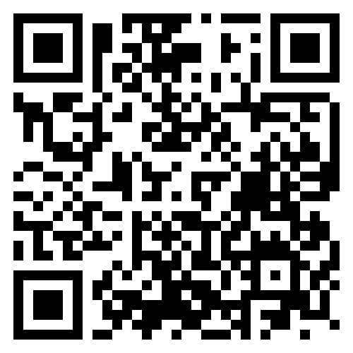
📝 Please share your feedback!
Scan to rate this session
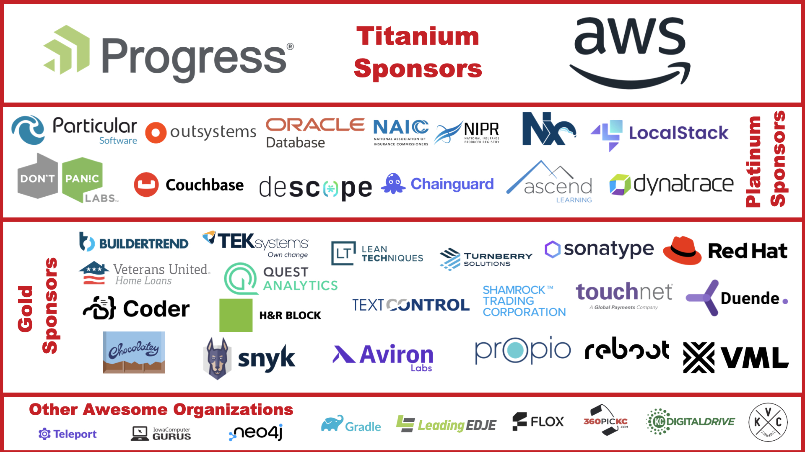